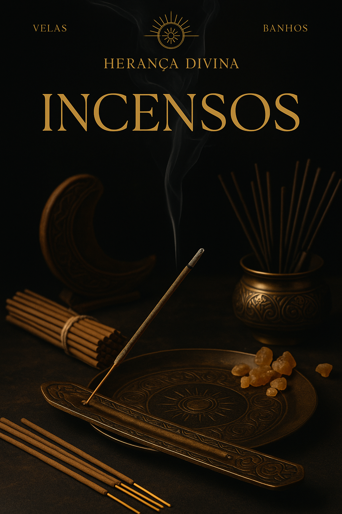
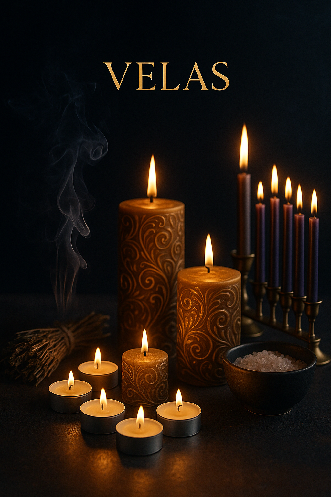

Incensos
Aromas sagrados para purificar e elevar a energia do seu espaço.
Velas
Velas para rituais, intenções e conexão com o divino. Inclui vela vermelha poderosa!
Banhos

Banhos de ervas para limpeza, proteção e atração de boas energias.
Tarô & Baralho Cigano

Conecte-se com sua espiritualidade através da sabedoria dos oráculos.